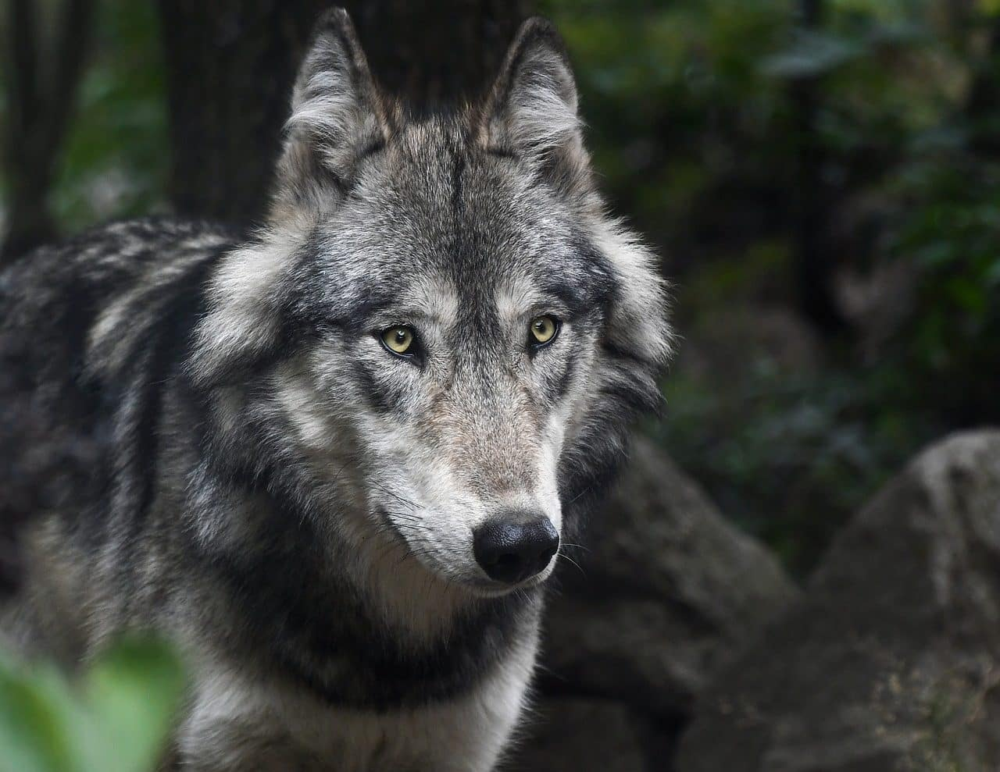
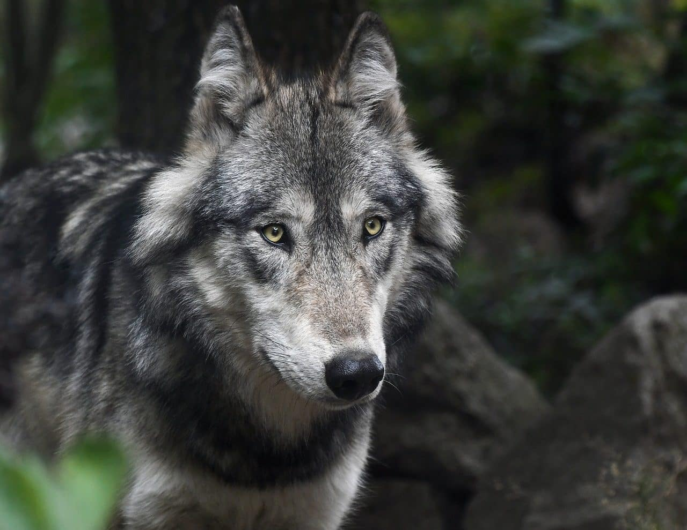

Presione el boton para mas información.
Presione el boton para mas información.
Presione el boton para mas información.
Animales acuaticos:
ballenas, delfines, tiburones, peces, medusas, pulpos, estrellas de mar, caballitos de mar.
Animales terrestres:
caballos, perros, gatos, elefantes, leones, tigres, osos, jirafas, cebras.
Animales aereo:
loros, aguilas, buitres, halcones, palomas, tucanes, flamencos, abejas.

 
